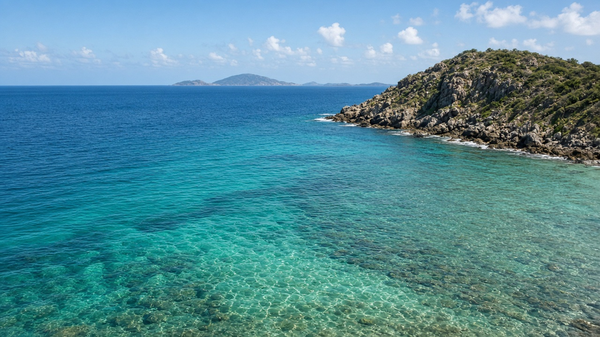

Oceanography & Marine Life
समुद्र विज्ञान र समुद्री जीव

Possible subtopics to explore for ocean science, marine ecosystems, and coastal stewardship.
समुद्र विज्ञान र समुद्री जीव

Possible subtopics to explore for ocean science, marine ecosystems, and coastal stewardship.